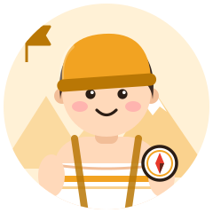
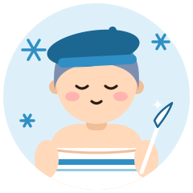

- H高温ガッツリ
- A外気浴派
- Tみんなでサウナ
- R計画・ルーティン
サ旅の開拓者
The Pioneer
計画を立てて、仲間と全国のサウナを巡る
熱さを仲間と分かち合う
盛り上げ隊タイプ遠征プランも完璧、同行者へのおすすめも的確。熱いサウナと外気浴の絶景をみんなで楽しみたいタイプです。
強み
- 情報収集力
- 段取り上手
- 思い出づくりが得意
気をつけたいこと
- 詰め込みすぎ注意。余白も旅の楽しみ
相性のいいタイプ

静かな水面に、言葉にならない感覚を見つける
計画的な旅の途中で、氷の詩人の静かな感性が、思いがけない発見を教えてくれる。
おすすめのサウナ
絶景外気浴のあるリゾート系サウナ
- saunaM 愛知県 名古屋駅 サウナ専門
駅近の完全予約制プライベートサウナ2つの個室に水風呂と外気浴スペースを完備。男女でも利用できる 公式サイト地図で見る - 嘉島湯元水春 熊本県 嘉島町 スパ・健康ランド
オートロウリュと外気浴チェアが揃う温泉オートロウリュのサウナ、15℃前後の水風呂、露天のととのい椅子 公式サイト地図で見る - 名古屋HOTEL HOQA 花色の湯 愛知県 名古屋市南区 ホテル・カプセル
ふたりで過ごす個室サウナつきホテル定員2名の個室ドライサウナでセルフロウリュができる。露天風呂付き客室では外気浴も可能 公式サイト地図で見る
※ 営業状況・料金・利用条件は変わることがあります。訪問前に公式情報をご確認ください。
あなたのタイプは？
サ旅の開拓者は、サウナの好みで分かれる16タイプのひとつです。質問に答えるだけで、あなたの「ととのい方」がわかります（無料・登録不要・約3分）。
ほかのタイプ
※ 娯楽目的の診断です。サウナは体調に合わせて無理せず、水分補給をしてお楽しみください。